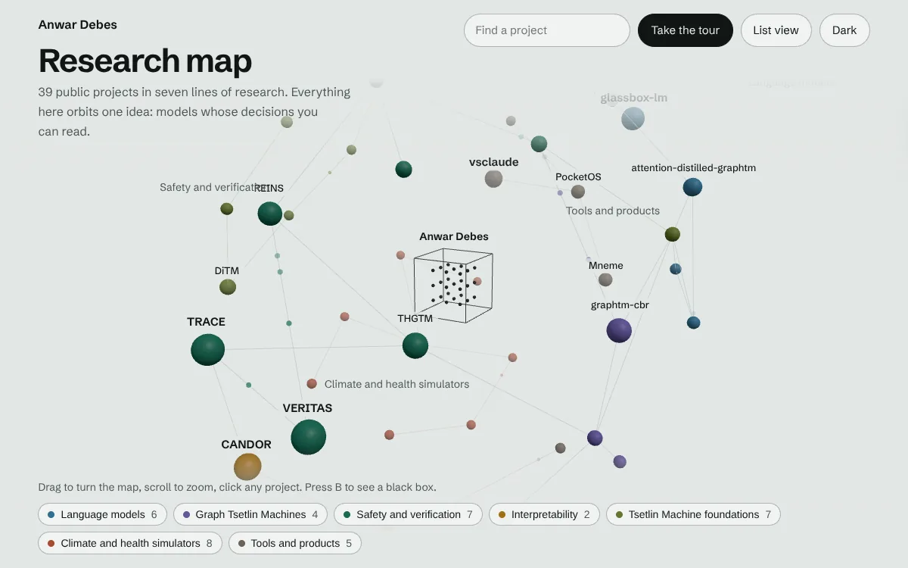
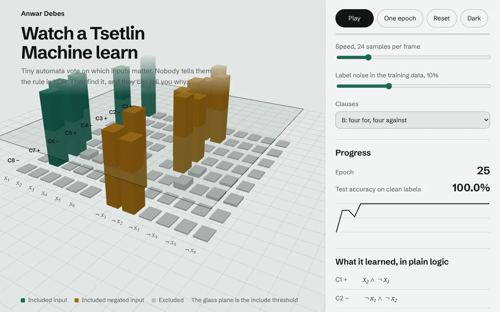
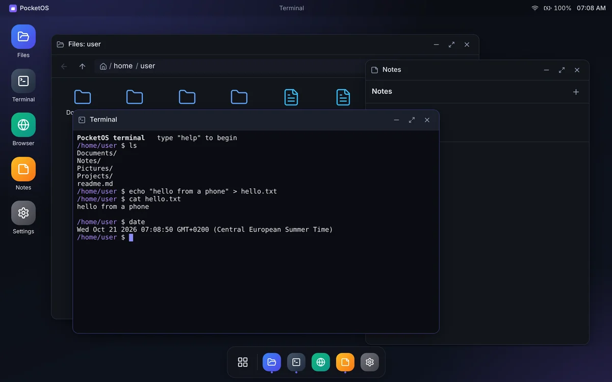
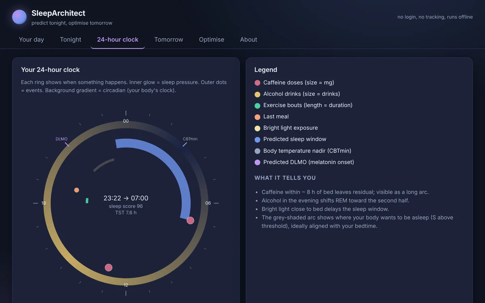

AI that shows its work.
I’m Anwar Debes. I research Tsetlin Machines at CAIR, University of Agder: models whose every decision is a set of logical clauses you can read, check and argue with.
Outside the lab I build game-playing agents, data warehouses and apps that run entirely in your browser. I’m also CFO at SafeMediAI, and in 2025 my bachelor thesis team at NTNU won the Eurekaprisen.
That’s me, in steel pins. Run your pointer across to press them.
Try to sneak a prompt past my guardrail
TRACE is a guardrail for AI agents that I built from Tsetlin logic. Its content guard runs right here in your browser: 200 clauses over 256 words, 12.5 KiB, no neural network and no server. Write something and see which clauses vote.
When it is wrong, the clauses show you exactly why, which is the whole point. Nothing you type leaves your browser. The model here is seed 0 of the paper’s twelve-seed protocol, trained on the 546 training prompts of deepset/prompt-injections. On the 116 held-out prompts it scores F1 0.819 (accuracy 0.836). Code and paper.
A coding agent that shows its work, too
Coding agents usually give you a spinner while they change your code. Pixie, my open-source agent for any model, acts out every step instead, and nothing is edited or run until you say yes. Here is the 54-second film.
A short film: a spinner turns into Pixie, a coral pixel creature. It acts out thinking, reading, searching, editing and running tests, then fixes a real bug in the Pixie browser UI while waiting for approval before each edit.
Right now, Pixie is Resting
Selected work
Research first, then things I built for people to use. Each one comes with a paper, a measured result you can rerun or a live app you can open, including the parts that did not work.
Research
-
glassbox-lm
My master’s research: steps toward a language model whose knowledge is a set of readable Tsetlin Machine clauses.
Three studies so far. The first registered 91 hypotheses before a single run, and the write-up leads with what did not work.
-
CANDOR
Interpretability by construction. A layer’s computation runs through named concepts, and every forward pass emits a certificate anyone can re-check.
On synthetic ground truth: δ ≈ 0.002 with no measurable accuracy cost, and backdoor detection at AUC ≈ 0.90.
-
TRACE
A CPU-only guardrail for AI agents: readable content clauses, bounded-memory temporal monitors and a tamper-evident certificate ledger that can be verified without the model.
F1 0.827 on deepset/prompt-injections at 107 µs per check, in 12.5 KiB. It is the one you just tried to fool.
-
VERITAS
A guardrail whose safety properties are proved or refuted by SAT and SMT solvers, with bypasses repaired by construction.
Retraining stalls at 8 provable bypasses. Constructive repair reaches 0, and accuracy goes from 0.69 to 0.71.
-
LUCID
A glass-box, safety-shielded agent for ARC-AGI-3, with a readable world model and a decision trace for every step. It runs on a CPU.
It completes 2 public levels (VC33 and LP85). Its overall score is in the same sub-1% range as frontier models, and the README says so.
-
graphtm-cbr
A graph-walking Tsetlin Machine for Ames mutagenicity that explains each prediction and proposes the smallest valid edit to the molecule.
Recourse succeeds for 95.5% of positives (191 of 200). Its AUROC of 0.685 trails a fingerprint baseline, and is reported anyway.
-
NEXUS
An AlphaZero-style agent for Chinese Checkers with two to six players: a 7.5M-parameter convolution and transformer network, Gumbel MCTS on a 0.45-second budget per move, and a rule-exact copy of the tournament server for self-play.
Three research prototypes run on it: coalition-aware search with a Plackett-Luce rank value, per-component values mixed inside the tree, and a network that is exactly equivariant to board rotations and seat swaps. 324 tests pass on every push.
Engineering
-
PocketOS
A desktop that runs in a phone’s browser: draggable, snapping windows, a virtual filesystem in IndexedDB, a terminal and a Monaco code editor, all on the client.
Installable and offline. On a narrow screen apps open full screen with an app switcher; give it room and the windows come back.
-
SleepArchitect
Predicts tonight’s sleep before you go to bed. It runs Borbély’s two-process model with the effects of caffeine, alcohol, exercise, light and meal timing, then ranks what to change.
It reproduces all 11 published findings it was checked against. The whole app is 18.7 KB gzipped and sends nothing anywhere.
-
IDM
An epidemiological data warehouse built three ways on the same 473,189 weekly disease reports from 1916 to 2011: a PostgreSQL star schema, MongoDB buckets and a Neo4j graph, behind one FastAPI layer and a React dashboard.
Kafka and ksqlDB stream new reports in, validate them and raise alerts, and 13 decision-support queries run on all three back ends side by side.
-
ThermoGuard
Heatwave deaths happen indoors. ThermoGuard forecasts indoor heat home by home with a physics model of each building plus a learned correction, then decides who gets help first.
In a simulated replay of the 2021 Pacific Northwest heatwave, a top-floor care home peaks at 52 °C. An equity floor lifts the worst-covered group from 0% to 11% coverage, at a cost in total lives saved that the report spells out.
-
Mneme
Turns a textbook into an Anki deck with a local model, so your notes never leave your machine. Every card says why it is easy or hard, optionally through a Tsetlin Machine.
156 tests pass without a GPU, Ollama or Anki. The quality benchmark has not been run yet, and the README says so.
-
vsclaude
A desktop IDE where you watch your AI coding agent work. Pixie, a pixel-art companion, acts out what the agent is really doing: reading, typing, searching, debugging.
House rule: every animation is bound to a real event. In beta, built with Tauri, React and TypeScript, with one event pipeline designed for several coding agents and local models.
-
Claude Code, in motion
Pixie on its own: a local coding agent for any model, with zero runtime dependencies and a browser UI where the mascot acts out every tool call. Reading runs freely, every edit and shell command waits for your OK, and catastrophic commands are refused even in auto-approve mode.
32 tests, six providers, one command to install. The live demo replays a recorded session in the real UI, and you decide whether the edit goes through.
Four more things to try

Research map
All 40 public projects as a 3D map you can orbit, search and tour, grouped into seven lines of research.

Watch a Tsetlin Machine learn
Train one on noisy XOR in your browser, watch its automata vote, then ask it to explain a prediction in plain logic.

PocketOS
A whole desktop in a browser tab. Open it on your phone, install it, and it keeps working offline.

SleepArchitect
Enter today’s coffee, drinks, training and light, and see tonight’s predicted sleep on a 24-hour clock.
Papers and reports
Every PDF sits next to the code that produced its numbers. All of them are also in one BibTeX file.
- The Explanation Is the Forward Pass: Interpretability by Construction with Certified Legible BottlenecksCANDOR
- A Tsetlin Runtime Assurance and Certification Engine for Interpretable, Tamper-Evident Guardrails on Agentic AITRACE
- A Temporal Hierarchical Graph Tsetlin Machine with Echo-Trace Automata for Trajectory-Level Verification of Agentic AITHGTM
- Formally Verified, Competence-Aware Interpretable Guardrails for Language ModelsVERITAS
- Model-Free, Certifying Least-Cost Repair of LLM-Agent Tool-Call TrajectoriesREINS
- A Glass-Box, Safety-Shielded Agent for Open-World Interactive Reasoning on ARC-AGI-3LUCID
- A Discrete-Diffusion Tsetlin Machine for Interpretable Generative Modelling of Tabular Boolean DataDiTM
- Multi-HGTM: Cross-View Conjunctive Fusion for the Graph Tsetlin MachineMulti-HGTM
- An Interpretable Tsetlin Machine Control Layer for LLM Agent Routing and EscalationClause-Driven-LLM
- SleepArchitect: A free, no-login predictive sleep model from caffeine, alcohol, exercise, light, and chronotypeSleepArchitect
- ThermoGuard: Real-Time Indoor Heat Risk Forecasting for Vulnerable Housing under Extreme Heat EventsThermoGuard
- Conformal, federated, robust and counterfactual Tsetlin MachinesConfTM, FedTM, RobTM and CCTM
About
I’m a master’s student in artificial intelligence at the University of Agder in Grimstad, doing my research at CAIR under Ole-Christoffer Granmo, who introduced the Tsetlin Machine.
Before that I took a bachelor’s in computer engineering, cybersecurity and programming, at NTNU Gjøvik. Our thesis, Automatic Removal of Sensitive Content in Images and Documents for Efficient Archiving, written with Rami Amer and Yasin Hessnawi for Mattilsynet, won the Eurekaprisen 2025 for the best bachelor thesis at the Faculty of Information Technology and Electrical Engineering.
I’m CFO at SafeMediAI, the Norwegian startup behind DeclassifAI. After hours I build things like PocketOS, a whole desktop inside your phone’s browser, and SleepArchitect, which predicts tonight’s sleep. The short version of all this is on one page.
- Studying
- MSc in Artificial Intelligence, University of Agder
- Research
- Tsetlin Machines, interpretability, AI safety and verification, reinforcement learning
- Working
- CFO, SafeMediAI
- Recognition
- Eurekaprisen 2025, NTNU
- Based in
- Grimstad, Norway
Get in touch
I’m open to research collaborations on interpretable and verifiable AI. GitHub is the quickest way to reach me.